希望有機會的話能實際用用看。
置頂 Note
相關的狀態
isLoading是否拿到 response 了（注意，如果有快取的話就算正在抓也會是 false）isFetching是否拿到 response 了（不會管有沒有快取）
懶人包：如果你不管有沒有 cache 都要顯示 Loading 的話，請一律用 isFetching 來當作你的 flag，isLoading 的本意只是為了讓你利用 cache 來減少等待 Loading 的次數。
Global Config
有些 config 的預設值可能不是我們要的，這時候我們除了在每一次使用 useQuery 的時候去調整以外，也可以直接在 Global 做設定。
設定的方法如下：
1 | function App() { |
useQuery 最基本的用法
基本上你要打 GET 請求的話都會用這個 hook。（如果是需要用 POST 帶參數來拿的那種也行啦）
useQuery 會接收三個參數：
key用來區分每一個請求（一個的話傳字串，多個的話傳陣列）fetcher你要 call api 的那個 function（會回傳一個 Promise 的那種）config用來調整配置的物件
1 | import axios from 'axios' |
這個 hook 會回傳一些常用的狀態，包含 isLoading、isError 等等，你直接拿出來用就可以了，很方便。
useMutation 最基本的用法
只要是會修改到 Sever 資料的請求，像是 POST、DELETE 等等你都需要用這一個 hook。（畢竟都用「mutation」這個字了，就代表你想「改變」某些東西）
useMutation 會接收兩個參數：
fetcher你要 call api 的那個 functionconfig用來調整配置的
下面是一個簡單的示範：
1 | import { Link, useHistory } from 'react-router-dom/cjs/react-router-dom.min' |
React Query vs 傳統 useEffect
在學之前可以先看一下前後差異長什麼樣，看完你應該會覺得 React Query 乾淨且直覺很多。
useEffect 版本：
1 | import { useState, useEffect } from 'react' |
React Query 版本：
1 | import axios from 'axios' |
可以注意到兩個點：
- 豪無疑問，行數少了很多。
- 不用自己處理
loading、error、data相關的 state。React Query 的useQuery會自動在內部管理這些狀態
不知道你心動了嗎，React Query 很香哦～
Cache - cacheTime
React Query 有快取機制，會把第一次抓到的內容先存起來，並且在下一次需要的時候拿出來用，像這樣：
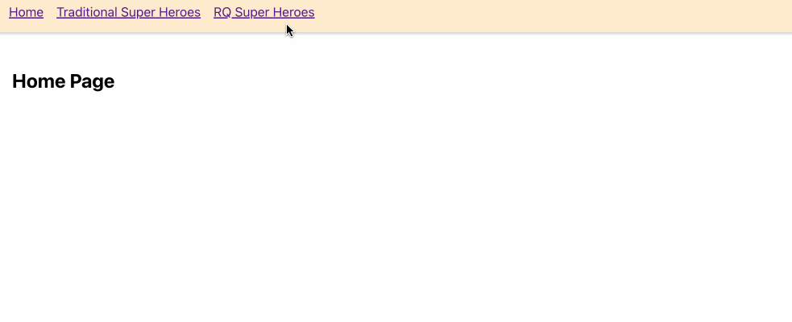
注意第一次的時候會有 Loading，第二次的時候就沒有了，這個就是快取，目的是為了讓使用者不用每次都要等待讀取的時間。
這時候應該會有一個疑問：
啊我如果 Server 的資料有更新勒？只從快取拿的話不就會是舊資料嗎！
問的好！React Query 當然有考慮到這一點，所以實際上並不是只有從快取拿資料而已，它還會在背後幫你重新抓一次新的資料。我們可以打開 network 來看就會發現確實是這樣子：
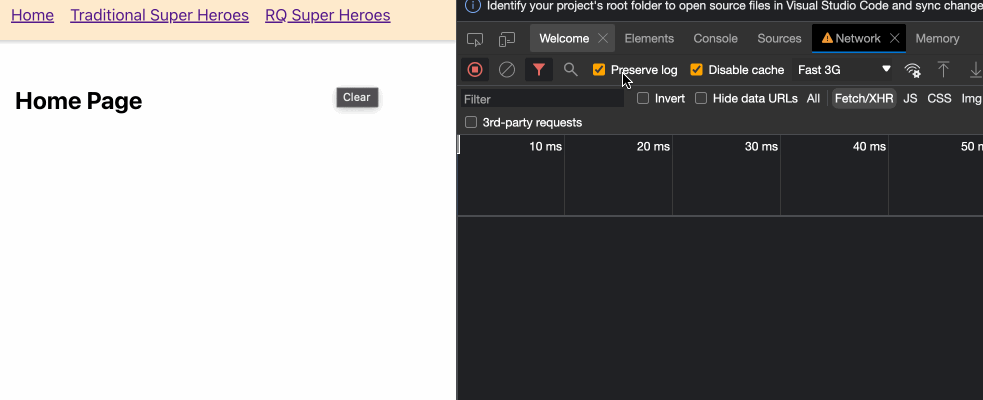
雖然畫面上不會出現 Loading，但可以看到背後還是發了一個請求去抓取最新的資料，並自動更新到畫面上。
React Query 的快取預設會保留五分鐘，如果你不喜歡的話可以透過 config 去改：
1 | useQuery('super-hero', getHeros, { cacheTime: 5000 }) // 快取保留 5 秒 |
Cache - staleTime
前面有介紹了一點快取機制，我們知道 React Query 會優先拿快取的資料來做顯示，接著在從背景重新抓一次最新資料。到這邊不知道你會不會有一個疑問：
既然都有快取了，有必要每一次都在背景重抓一次嗎？（假設已經知道某些資料不常更新）
如果你有這個困擾的話，staleTime 就是用來解決這個問題的。
我們可以透過 staleTime 來設定一個快取的「新鮮度」有多久？
原本的預設值是 0，也就是說在我們儲存快取的那一刻起就不新鮮了，因此每一次從快取拿資料時都會從背景去抓取最新的資料。
不太懂的話可以來看個範例，我們把 staleTime 設為 15 秒：
1 | useQuery('super-hero', getHeros, { staleTime: 15 * 1000 }) // 快取的新鮮度有 15 秒 |
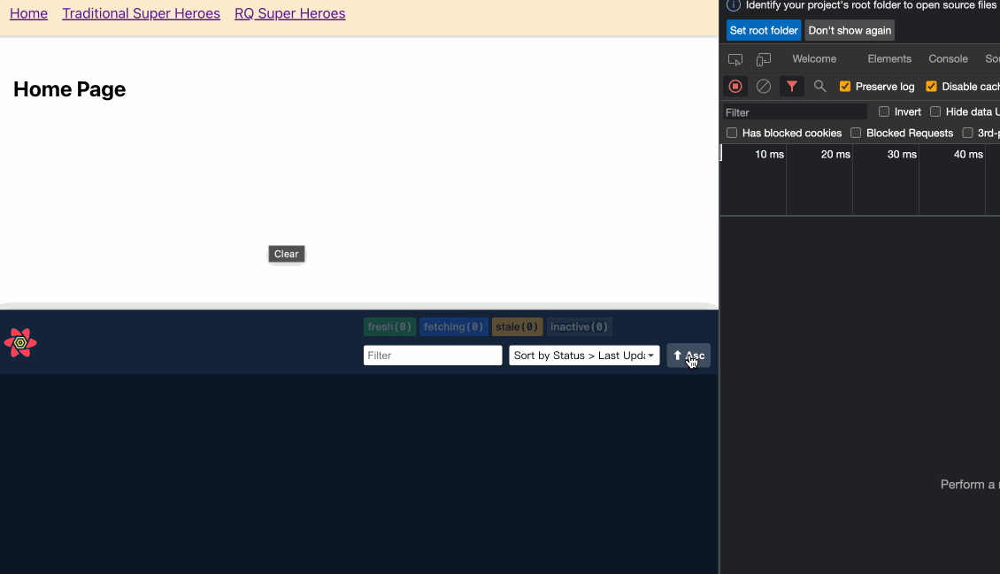
從圖中可以發現幾件事：
- 第一次進入頁面時因為還沒有快取，所以會發出一個請求去拿資料，接著再快取起來。
- 下次再進入同一個頁面時，沒有像前面一樣除了拿快取資料以外，還會在背景去發請求拿出最新的資料，而是先看這個快取是否還新鮮？如果是，就不會再額外發請求去拿資料。
所以我們可以透過這種方式決定多久後該去拿最新的資料，這個就是 staleTime 的用途。
refetchOnWindowFocus
React Query 有一個很厲害的功能是「當你從別的視窗或分頁切回來時，會自動觸發 refetch 的動作」，參考下圖：
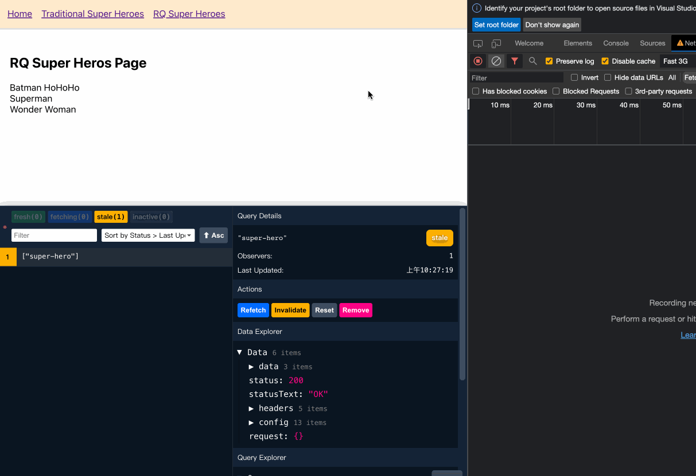
能看到每次切回來的時候都會在背景發請求去拿最新的資料。
這個功能叫 refetchOnWindowFocus，預設值為 true。如果不喜歡的話一樣可以透過 config 來設定：
1 | useQuery('super-hero', getHeros, { refetchOnWindowFocus: false }) // 關閉 refetch 的功能 |
refetchInterval
這個就比較直覺一點了，看到 Interval 應該就能大該猜到是「多久後要自動 refetch」。
這個功能預設是沒有打開的，所以我們要透過 config 來設定：
1 | useQuery('super-hero', getHeros, { refetchInterval: 1000 }) // 設定為 1 秒 |
所以現在每過一秒鐘就會去抓一次最新資料：
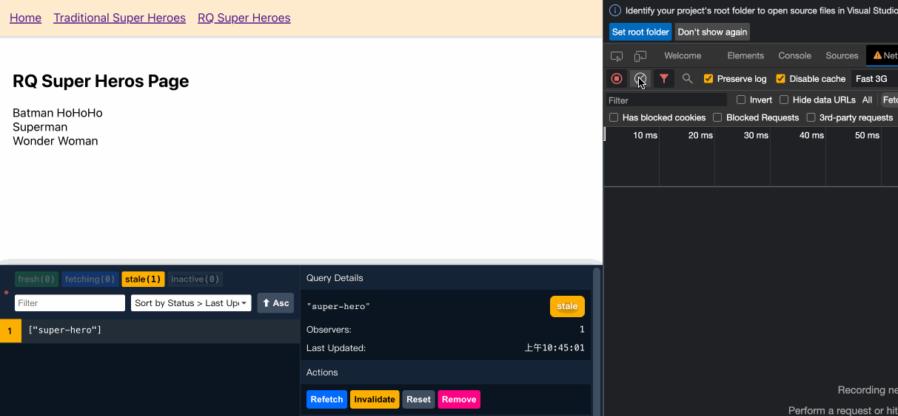
如果你想做的更徹底一點，讓 user 在不在目前頁面時也會執行 refetch 的話（預設不會），可以加上 refetchIntervalInBackground 這個設定：
1 | useQuery('super-hero', getHeros, { |
這樣你的頁面就會變得非常 real time，我覺得在某些情境下可能會很有幫助。
想在事件發生時才去呼叫 API：enabled
前面介紹的都是在元件 onMount 的時候自動去呼叫 API 拿資料，不過有些時候我們可能不想在一開始就抓資料，而是在特定事件發生時才去呼叫，例如：按下按鈕的時候。
這個時候可以這樣做：
1 | const { refetch } = useQuery('super-hero', getHeros, { enabled: false }) |
這邊做了兩件事，第一是先把 enabled 設為 false，避免在元件 onMount 時去呼叫 API，接著再把 useQuery 回傳的 refetch 跟按鈕的 onClick 事件做綁定，就可以做出這樣的效果：
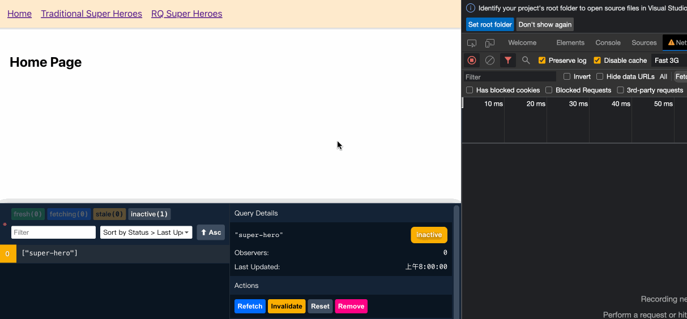
能看到現在進入頁面時不會直接去呼叫 API，而是要等到我們「按下按鈕」以後才會去呼叫，完美！
不過要注意這個方法一樣會保留快取機制（前面有介紹，忘記的話拉回去看），所以如果你的 Loading 狀態是用 isLoading 來控制的話，在按下第二次按鈕時就不會出現 Loading 畫面，因為 isLoading 只會在沒有快取資料的情況下才有機會出現 true。
以這個例子來看的話，在每一次按下按鈕的時候都顯示 Loading 會比較合理，所以我們這時候要拿的 flag 應該要是 isFetching，而不是 isLoading。
1 | export const RQSuperHeroesPage = () => { |
只是想提醒一下，注意不要寫錯了！
注意事項
雖然前面說把 enabled 設為 false 的話可以避免 onMount 時去打 API 這件事，但其實它並不單純只是這樣而已，它還會：
- 取消 refetch 的功能
- 取消 refetch 的功能
- 取消 refetch 的功能
也就是說所有跟 refetch 相關的功能都會失效，例如：refetchOnWindowFocus、refetchInterval 等等之類的。
在這種情況下想要做 refetch 的話就只能透過 useQuery 回傳的 refetch 來處理。你必須自己去觸發這個 function 才會觸發 refetch 的行為。
所以這邊想釐清 enabled 的實際用途，也順手留一段官方文件對這個 config 的敘述：
Set this to false to disable automatic refetching when the query mounts or changes query keys. To refetch the query, use the refetch method returned from the useQuery instance. Defaults to true.
side effect 的好朋友：onSuccess / onError
打 API 的時候除了確保我們有拿到資料以外，我們可能還會想做一些 side effect，例如說：錯誤發生時自動導回首頁、列表更新時自動更新滾軸位置等等。
在沒有 React Query 之前你應該都會透過 useEffect 來做這些事，不過現在你可以透過 onSuccess 和 onError 來處理。
來看個例子，我自己還蠻常做的一種 effect 是發生錯誤時自動導回首頁，所以在 React Query 裡可以這樣做：
1 | export const RQSuperHeroesPage = () => { |
實際效果：
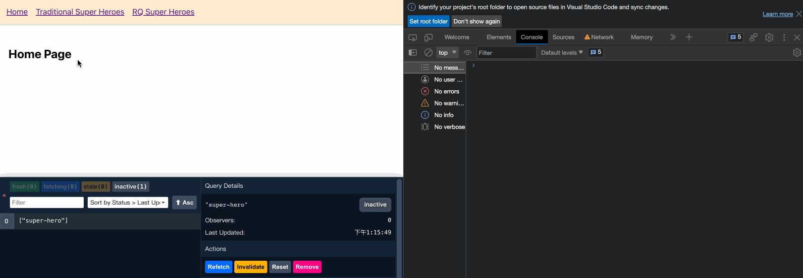
這邊先提醒一下，因為我沒有特別調整設定，所以預設會在失敗後嘗試四次，直到四次都失敗的話才會進入 onError 處理，所以才會看到 console 噴了四次 GET 錯誤。
但總之能看到我們成功運用了 onError 來處理重新導向的 side effect。
最後再提醒一件小事，就是 onSuccess 和 onError 都會自動接收一個參數，所以有需要的話可以拿出來用：
1 | const onError = (error) => { |
後端的資料太髒了，讓我 select 一下
這應該是 90% 的前端都會碰到的問題，如果是寫 useEffect 的話你通常會在 setState 以前先把資料整理好在寫進去。
那在 React Query 怎麼做呢？你可以用 select 這個 config 來處理，來看個範例。
假設原本回傳的資料長這樣：
1 | ;[ |
如果我只需要由 name 組成的 Array，我可以這樣寫：
1 | const { data } = useQuery('super-hero', getHeros, { |
寫成這樣以後 data 值就會變成這邊的 heroNames，而不是原本 axios 的 response。（假設你是用 axios 的話）
你的 key 設對了嗎？抓取 Detail 資料時可能會犯的錯
其實這邊主要是想提醒 useQuery 中的 key 的意義，但我覺得這個錯誤應該最常發生在抓 Detail 資料的時候，所以才用這個來當標題。
想像一下你有一個列表，每一個列表點進去以後可以看到細節資訊，那你會怎麼實作 detail 的頁面？應該不外乎都是像這樣吧：
1 | import axios from 'axios' |
看起來挺合理的吧？但其實這樣寫會有一個問題，注意這一段：
1 | useQuery('super-hero-detail', getHeroDetail, { |
這邊就先直接說了，問題在於 key。不過為什麼呢？我們可以先思考一個問題：
/superheroes/1/superheroes/2/superheroes/3- …
這幾個 request 拿到的回傳值會相同嗎？當然不會吧！那如果都存同一個 key 會發生什麼事？我們直接來看看：
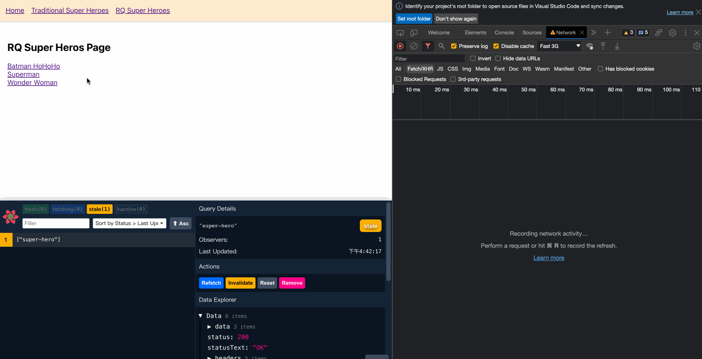
可以看到第一次點進去的時候會 React Query 會建立一個快取，並且用 ["super-hero-detail"] 來當作 key 儲存。接著第二次進去的時候因為也是用同一個 key 來發請求，所以 React Query 就會先從之前的快取中拿資料，再利用背景 refetch 的方式來更新資料。
也因為這樣，才會出現到明明點的是第二個，結果畫面上卻先顯示第一個的資訊，最後才刷新成正確的內容。
這個就是沒正確設定好 key 的話會碰到的問題。我們明明知道每一筆頁面的 detail 資料一定會不一樣，既然如此，怎麼可以拿其他頁面的 detail 資料來用呢？這樣不合理，所以每一個 detail 應該要有自己的獨立的快取才對。
那要怎麼解決呢？其實很簡單，就是幫每個 detail 建立各自的 key 就好了嘛！如果眼睛夠尖的話應該會注意到其實 key 的值是用 Array 來存的，所以我們只要改用陣列的方式來設定就好了，像這樣：
1 | useQuery(['super-hero-detail', id], getHeroDetail, { |
這樣子 React Query 就會把每一個不同 id 的請求用不同的 key 來儲存，就不會再出現拿錯快取的問題：
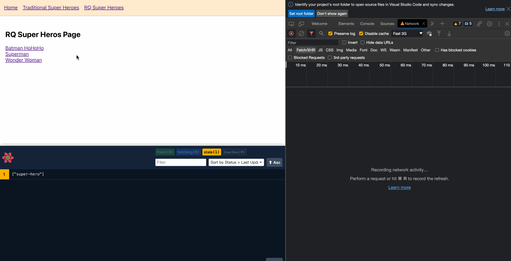
能看到現在每一個 detail 頁面都有自己獨立的 key，所以就不會再出現拿錯快取的問題，只有在進到相同頁面的時候才會（因為相同頁面的 key 會一樣）。
Dynamic Parallel fetch
簡單來說，有一種情境是妳想在一個頁面同時發出多個請求，但你又不知道實際上會需要幾個的時候就叫做「Dynamic Parallel fetch」。
如果碰到這種情況的話可以參考 useQueries 這個 hook，雖然我個人更偏好用 Promise.all 來處理這種 case，但還是能認識一下這個 hook。
這邊先直接看 code：
1 | import axios from 'axios' |
useQueries 只會接收一個參數，這個參數會是一個 Array，裡面的每一個元素都是一個物件。這些物件可以想成是用來代表 useQuery 的內容，所以 key、function、config 等等的設定都會放在這裡面。
至於回傳的結果會是一個 Array 裝著每個 useQuery 的資料，像這樣：
1 | [ |
常用到的 data、error 等有用的資訊都會儲存裡面，所以就能透過這個來做處理。
有相依性的請求
相依性的請求是指假設你有 A、B 兩個 API 要打，但可能 B 需要拿 A 回傳的資料來呼叫，所以你必須等 A 打完後才接著去打 B，這個就叫做相依，因為 B 必須依賴 A。
如果是寫 useEffect 的話我們通常會用 async / await 來處理，例如：
1 | useEffect(() => { |
說實話我覺得這種 case 在 useEffect 的情境下寫起來還蠻直覺的，因為就是單純的 JS 概念而已嘛，不過既然都用套件了就得照套件的規矩來，所以接著來看在 React Query 要怎麼做一樣的事吧！
在 React Query 的話你必須這樣做：
1 | import axios from 'axios' |
其實概念上差不多，只是因為現在是 hook 所以沒辦法寫什麼 async / await，因此得改用 enabled 這個 flag 來處理，流程大概會像下面這樣：
- 剛進入頁面時，會先打 user 的 API（因為它的 enabled 預設是
true） - 拿到 user 資料後，
Boolean(channelId)會從false轉成true - 呼叫取得頻道資訊的 API，結束。
所以就是一個用 enabled 來控制什麼時候要發出請求的概念，我覺得相較起來比較沒那麼直覺，但也不失為一種做法就是了！
不想要一直看到 Loading？也許可以試試 initialData
這個情境是這樣子，我們先來看圖說故事：
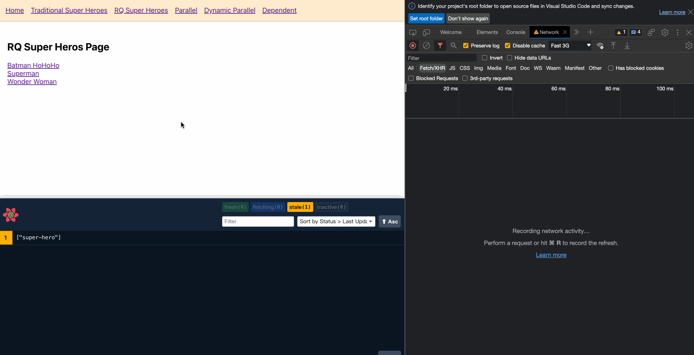
這是一個從 List 進入 Detail 頁面的示範。在我們還沒有 Cache 之前進入一個 Detail 頁面都必須先 Loading，接著等拿到資料後再顯示畫面。
這時候就有一個想法冒出來了：
如果 List 的資料本身就包含一些 Detail 資訊的話，是不是可以拿來當作 Detail 頁面的初始資料，接著再透過背景 refetch 的方式去更新完整內容就好？這樣就不需要每一次都看到 Loading 了。
答案當然是可以。只是雖然不用等 Loading 是件好事，但我覺得用背景刷新的這種方式在有些情境下可能反而是種反效果，所以用之前還是要想一下是不是真的適合在用會比較好。
要實現這件事很簡單，思路是這樣：
- 在 Detail 頁面的
useQuery加上initialData的 config - 利用
useQueryClient拿到 List 頁面的快取資料，寫入initialData
實際的 code 會長這樣：
1 | import axios from 'axios' |
改寫成這樣後，第一次進入 Detail 頁面時就會先拿 initialData 來顯示，接著再透過背景 refetch 來更新資料，效果會像這樣：
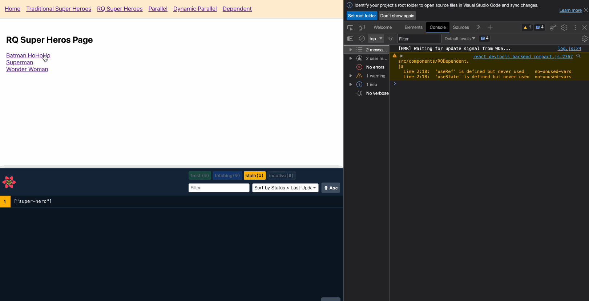
這樣子就不會再有 Loading 畫面了，然後等拿到資料的時候再更新到畫面上。
不過就像一開始說的，有些時候加上必要的 Loading 其實是比較好的，所以我覺得還是要看時機來使用。